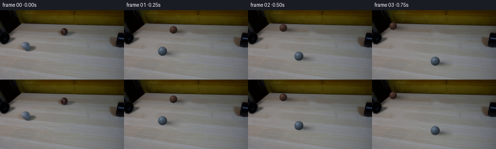
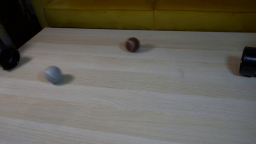
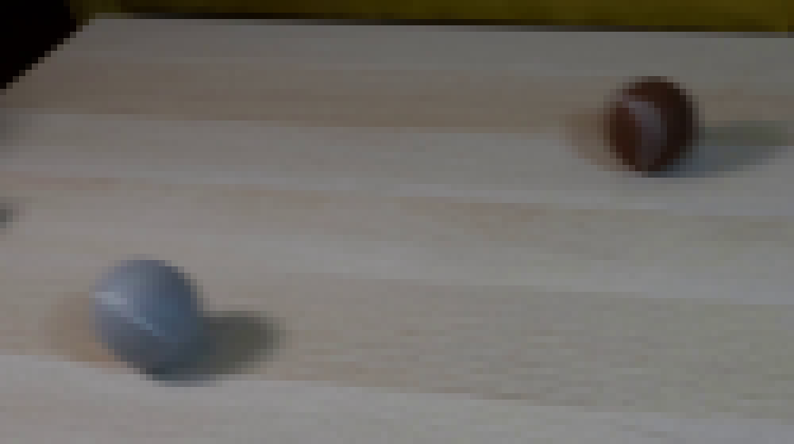
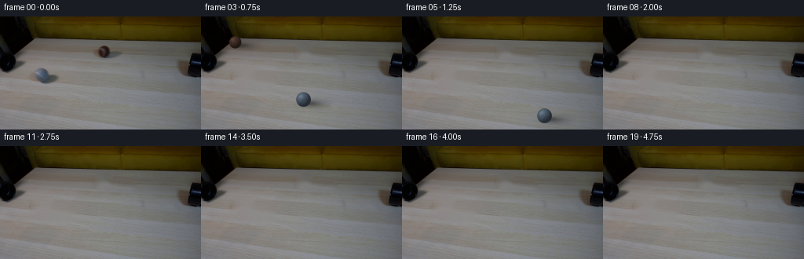
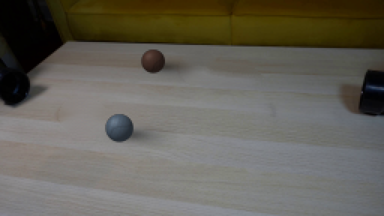

CODING AGENTS AS PIXEL WORLD MODELS
traex/GPT-5.6-Sol · 0180
点击播放 · 原生 RGB 像素
逐轮保存的候选
回放视频、检查图与代码变化。
每份候选均可单独播放。实际图片检查记录在下方工具轨迹中。
候选 01播放与检查图
点击播放 · 原生 RGB 像素


展开代码变化
--- 上一保存版本
+++ 本次保存版本
@@ -0,0 +1,165 @@
+from pathlib import Path
+import math
+import numpy as np
+import cv2
+from PIL import Image
+import artifact_io
+
+CASE_DIR = Path(__file__).resolve().parent
+W, H, N = 256, 144, 20
+SS = 4
+
+
+def make_clean_plate(src):
+ """Remove the two already-moving balls, retaining pipes and all table detail."""
+ mask = np.zeros((H, W), np.uint8)
+ # Compact masks cover ball and cast shadow; broad enough to remove residual halos.
+ cv2.ellipse(mask, (55, 77), (16, 13), 8, 0, 360, 255, -1)
+ cv2.ellipse(mask, (74, 82), (22, 9), 7, 0, 360, 255, -1)
+ cv2.ellipse(mask, (132, 45), (13, 11), 0, 0, 360, 255, -1)
+ cv2.ellipse(mask, (150, 49), (24, 8), 5, 0, 360, 255, -1)
+ # TELEA preserves the long horizontal wood grain particularly well here.
+ plate = cv2.inpaint(src, mask, 5, cv2.INPAINT_TELEA)
+ # Put a little of the local horizontal grain back across each repair. The
+ # low-opacity directional texture avoids a visibly smooth inpainted island.
+ rng = np.random.default_rng(180)
+ m = cv2.GaussianBlur(mask, (0, 0), 2.0).astype(np.float32) / 255.0
+ fine = rng.normal(0, 1.0, (H, W)).astype(np.float32)
+ fine = cv2.GaussianBlur(fine, (13, 1), 0)
+ platef = plate.astype(np.float32)
+ platef += (fine * 0.8 * m)[..., None]
+ return np.clip(platef, 0, 255).astype(np.uint8)
+
+
+def rodrigues(v, axis, angle):
+ axis = axis / (np.linalg.norm(axis) + 1e-9)
+ return (v * math.cos(angle) + np.cross(axis, v) * math.sin(angle)
+ + axis * np.dot(axis, v) * (1.0 - math.cos(angle)))
+
+
+def sphere_rgba(radius, color, travel_angle, seed, brown=False):
+ """A softly fuzzy, antialiased tennis ball with world-fixed illumination."""
+ r = radius * SS
+ pad = int(math.ceil(r * 1.55))
+ yy, xx = np.mgrid[-pad:pad+1, -pad:pad+1].astype(np.float32)
+ nx, ny = xx / r, yy / r
+ rr = nx*nx + ny*ny
+ inside = rr <= 1.0
+ nz = np.sqrt(np.maximum(0.0, 1.0 - rr))
+
+ # Sphere orientation. For image velocity v=(vx,vy), the rolling axis is
+ # (vy,-vx,0). Screen y is down, which is handled consistently below.
+ axis = np.array([0.36, -0.93, 0.0], np.float32) if not brown else np.array([-0.13, 0.99, 0.0], np.float32)
+ # Inverse-rotate visible surface normals into material coordinates.
+ pts = np.stack([nx, ny, nz], axis=-1)
+ flat = pts.reshape(-1, 3)
+ a = -travel_angle
+ ca, sa = math.cos(a), math.sin(a)
+ ax = axis / np.linalg.norm(axis)
+ local = flat*ca + np.cross(ax[None, :], flat)*sa + ax[None, :]*((flat@ax)[:,None])*(1-ca)
+ local = local.reshape(pts.shape)
+ lx, ly, lz = local[...,0], local[...,1], local[...,2]
+
+ # Stable felt mottling attached to the ball, not the camera.
+ felt = (np.sin((lx*9.7 + ly*4.1 + seed)*2.2) +
+ .55*np.sin((ly*14.3 - lz*5.8 + seed*.7)*1.7) +
+ .30*np.sin((lx*27.0 + lz*11.0 + seed)*1.15))
+ # A restrained curved tennis-ball seam. It rotates with the material.
+ seamfun = lx - (0.35*np.sin(2.6*ly + 0.7) + 0.12*ly)
+ seam = np.exp(-(seamfun / 0.075)**2) * (np.abs(ly) < .94)
+
+ # Fixed upper-left softbox light and weak frontal fill.
+ light = np.array([-0.52, -0.58, 0.63], np.float32)
+ light /= np.linalg.norm(light)
+ ndotl = np.maximum(0.0, nx*light[0] + ny*light[1] + nz*light[2])
+ shade = 0.47 + 0.57*ndotl
+ rim = np.clip(nz, 0, 1)**0.25
+ shade *= 0.80 + 0.20*rim
+ spec = np.maximum(0.0, nx*(-.38) + ny*(-.44) + nz*.81)**18
+
+ base = np.array(color, np.float32)
+ rgb = base[None,None,:] * shade[...,None]
+ rgb *= (1.0 + (0.032 if brown else 0.045)*felt[...,None])
+ rgb *= (1.0 - (0.18 if brown else 0.13)*seam[...,None])
+ rgb += spec[...,None] * (22 if brown else 29)
+
+ # Fuzzy edge, with subpixel antialiasing. Tiny felt wisps remain subtle.
+ dist = np.sqrt(rr)
+ alpha = np.clip((1.018 - dist)*r, 0, 1)
+ alpha *= inside | (dist < 1.018)
+ alpha *= 0.96 + 0.04*np.clip(felt, -1, 1)
+ rgba = np.dstack([np.clip(rgb,0,255), np.clip(alpha*255,0,255)]).astype(np.uint8)
+ return rgba
+
+
+def alpha_over(canvas, patch, cx, cy):
+ """Composite supersampled RGBA patch onto supersampled RGBA overlay."""
+ ph, pw = patch.shape[:2]
+ x0 = int(round(cx*SS - pw/2)); y0 = int(round(cy*SS - ph/2))
+ x1, y1 = x0+pw, y0+ph
+ sx0=max(0,-x0); sy0=max(0,-y0); sx1=pw-max(0,x1-W*SS); sy1=ph-max(0,y1-H*SS)
+ dx0=max(0,x0); dy0=max(0,y0); dx1=min(W*SS,x1); dy1=min(H*SS,y1)
+ if sx1<=sx0 or sy1<=sy0: return
+ src=patch[sy0:sy1,sx0:sx1].astype(np.float32)/255
+ dst=canvas[dy0:dy1,dx0:dx1].astype(np.float32)/255
+ sa=src[...,3:4]; da=dst[...,3:4]
+ oa=sa+da*(1-sa)
+ orgb=(src[...,:3]*sa + dst[...,:3]*da*(1-sa))/np.maximum(oa,1e-6)
+ canvas[dy0:dy1,dx0:dx1,:3]=np.clip(orgb*255,0,255).astype(np.uint8)
+ canvas[dy0:dy1,dx0:dx1,3]=np.clip(oa[...,0]*255,0,255).astype(np.uint8)
+
+
+def shadow_patch(radius, vx, vy):
+ """Low grazing light casts a soft shadow down and to the right."""
+ # Built as a generous alpha-only supersampled tile.
+ rw=int(radius*SS*3.5); rh=int(radius*SS*1.8)
+ y,x=np.mgrid[-rh:rh+1,-rw:rw+1].astype(np.float32)
+ # Contact core plus the source-image's rightward diffuse tail.
+ core=np.exp(-0.5*((x/(radius*SS*.78))**2+(y/(radius*SS*.28))**2))*.37
+ tail=np.exp(-0.5*(((x-radius*SS*1.15)/(radius*SS*1.15))**2+
+ ((y-radius*SS*.13)/(radius*SS*.43))**2))*.23
+ a=np.clip(core+tail,0,.50)
+ p=np.zeros((2*rh+1,2*rw+1,4),np.uint8)
+ p[...,:3]=np.array([22,23,24],np.uint8)
+ p[...,3]=(a*255).astype(np.uint8)
+ return p
+
+
+def render_frame(plate, i):
+ overlay=np.zeros((H*SS,W*SS,4),np.uint8)
+ # Pixel/frame at 4 fps: swift enough to traverse the demonstration area in ~1.5 s.
+ gray0=np.array([54.0,75.0]); gv=np.array([25.5,10.3])
+ brown0=np.array([131.5,44.7]); bv=np.array([-29.3,-3.9])
+ entries=[('gray',gray0+gv*i,gv,9.2,(80,96,113),1.7,False),
+ ('brown',brown0+bv*i,bv,7.8,(73,49,41),3.3,True)]
+ # Shadows first. A 0.55-frame shutter sample makes motion readable without streaking.
+ for _,pos,v,r,col,seed,brown in entries:
+ if -30<pos[0]<W+30 and -30<pos[1]<H+30:
+ sh=shadow_patch(r,*v)
+ alpha_over(overlay,sh,pos[0]+r*.72,pos[1]+r*.48)
+ for _,pos,v,r,col,seed,brown in entries:
+ if -25<pos[0]<W+25 and -25<pos[1]<H+25:
+ # Rotation angle equals distance/radius (no slipping).
+ angle=(np.linalg.norm(v)*i)/r
+ ball=sphere_rgba(r,col,angle,seed,brown)
+ alpha_over(overlay,ball,pos[0],pos[1])
+ # Downsample only the overlay; the locked clean plate itself stays pixel-stable.
+ small=cv2.resize(overlay,(W,H),interpolation=cv2.INTER_AREA).astype(np.float32)
+ a=small[...,3:4]/255.0
+ out=small[...,:3]*a+plate.astype(np.float32)*(1-a)
+ return np.clip(out,0,255).astype(np.uint8)
+
+
+def main():
+ first=np.array(Image.open(CASE_DIR/'first_frame.png').convert('RGB'),dtype=np.uint8)
+ assert first.shape==(H,W,3)
+ # OpenCV expects BGR for inpainting, but treating RGB channels independently is equivalent.
+ plate=make_clean_plate(first)
+ frames=np.empty((N,H,W,3),np.uint8)
+ frames[0]=first # generation contract: exact, byte-for-byte pixel identity
+ for i in range(1,N):
+ frames[i]=render_frame(plate,i)
+ artifact_io.save(frames,CASE_DIR)
+
+if __name__=='__main__':
+ main()
可观测工具轨迹
实际执行的命令与返回图片。
命令 1exit 0
/bin/bash -lc "cat prompt.txt && printf '\\n--- GENERATION RULES ---\\n' && cat GENERATION_RULES.md"
命令 2exit 1
/bin/bash -lc "find . -maxdepth 2 -type f -printf '%p\\n' | sort && printf '\\n--- binaries ---\\n' && command -v ffmpeg && command -v python3"
命令 3exit 0
/bin/bash -lc 'cat artifact_io.py'
命令 4exit 0
/bin/bash -lc "python3 - <<'PY' mods=['numpy','PIL','cv2','imageio','scipy'] for m in mods: try: x=__import__(m); print(m,'OK',getattr(x,'__version__','')) except Exception as e: print(m,'NO',e) PY"
命令 5exit 0
/bin/bash -lc "mkdir -p .tmp && python3 - <<'PY'
from PIL import Image
im=Image.open('first_frame.png')
im.resize((1024,576),Image.Resampling.NEAREST).save('.tmp/up.png')
im.crop((30,25,155,95)).resize((1000,560),Image.Resampling.NEAREST).save('.tmp/balls.png')
PY"命令 6exit 0
/bin/bash -lc "cat > generate.py <<'PY'
from pathlib import Path
import math
import numpy as np
import cv2
from PIL import Image
import artifact_io
CASE_DIR = Path(__file__).resolve().parent
W, H, N = 256, 144, 20
SS = 4
def make_clean_plate(src):
\"\"\"Remove the two already-moving balls, retaining pipes and all table detail.\"\"\"
mask = np.zeros((H, W), np.uint8)
# Compact masks cover ball and cast shadow; broad enough to remove residual halos.
cv2.ellipse(mask, (55, 77), (16, 13), 8, 0, 360, 255, -1)
cv2.ellipse(mask, (74, 82), (22, 9), 7, 0, 360, 255, -1)
cv2.ellipse(mask, (132, 45), (13, 11), 0, 0, 360, 255, -1)
cv2.ellipse(mask, (150, 49), (24, 8), 5, 0, 360, 255, -1)
# TELEA preserves the long horizontal wood grain particularly well here.
plate = cv2.inpaint(src, mask, 5, cv2.INPAINT_TELEA)
# Put a little of the local horizontal grain back across each repair. The
# low-opacity directional texture avoids a visibly smooth inpainted island.
rng = np.random.default_rng(180)
m = cv2.GaussianBlur(mask, (0, 0), 2.0).astype(np.float32) / 255.0
fine = rng.normal(0, 1.0, (H, W)).astype(np.float32)
fine = cv2.GaussianBlur(fine, (13, 1), 0)
platef = plate.astype(np.float32)
platef += (fine * 0.8 * m)[..., None]
return np.clip(platef, 0, 255).astype(np.uint8)
def rodrigues(v, axis, angle):
axis = axis / (np.linalg.norm(axis) + 1e-9)
return (v * math.cos(angle) + np.cross(axis, v) * math.sin(angle)
+ axis * np.dot(axis, v) * (1.0 - math.cos(angle)))
def sphere_rgba(radius, color, travel_angle, seed, brown=False):
\"\"\"A softly fuzzy, antialiased tennis ball with world-fixed illumination.\"\"\"
r = radius * SS
pad = int(math.ceil(r * 1.55))
yy, xx = np.mgrid[-pad:pad+1, -pad:pad+1].astype(np.float32)
nx, ny = xx / r, yy / r
rr = nx*nx + ny*ny
inside = rr <= 1.0
nz = np.sqrt(np.maximum(0.0, 1.0 - rr))
# Sphere orientation. For image velocity v=(vx,vy), the rolling axis is
# (vy,-vx,0). Screen y is down, which is handled consistently below.
axis = np.array([0.36, -0.93, 0.0], np.float32) if not brown else np.array([-0.13, 0.99, 0.0], np.float32)
# Inverse-rotate visible surface normals into material coordinates.
pts = np.stack([nx, ny, nz], axis=-1)
flat = pts.reshape(-1, 3)
a = -travel_angle
ca, sa = math.cos(a), math.sin(a)
ax = axis / np.linalg.norm(axis)
local = flat*ca + np.cross(ax[None, :], flat)*sa + ax[None, :]*((flat@ax)[:,None])*(1-ca)
local = local.reshape(pts.shape)
lx, ly, lz = local[...,0], local[...,1], local[...,2]
# Stable felt mottling attached to the ball, not the camera.
felt = (np.sin((lx*9.7 + ly*4.1 + seed)*2.2) +
.55*np.sin((ly*14.3 - lz*5.8 + seed*.7)*1.7) +
.30*np.sin((lx*27.0 + lz*11.0 + seed)*1.15))
# A restrained curved tennis-ball seam. It rotates with the material.
seamfun = lx - (0.35*np.sin(2.6*ly + 0.7) + 0.12*ly)
seam = np.exp(-(seamfun / 0.075)**2) * (np.abs(ly) < .94)
# Fixed upper-left softbox light and weak frontal fill.
light = np.array([-0.52, -0.58, 0.63], np.float32)
light /= np.linalg.norm(light)
ndotl = np.maximum(0.0, nx*light[0] + ny*light[1] + nz*light[2])
shade = 0.47 + 0.57*ndotl
rim = np.clip(nz, 0, 1)**0.25
shade *= 0.80 + 0.20*rim
spec = np.maximum(0.0, nx*(-.38) + ny*(-.44) + nz*.81)**18
base = np.array(color, np.float32)
rgb = base[None,None,:] * shade[...,None]
rgb *= (1.0 + (0.032 if brown else 0.045)*felt[...,None])
rgb *= (1.0 - (0.18 if brown else 0.13)*seam[...,None])
rgb += spec[...,None] * (22 if brown else 29)
# Fuzzy edge, with subpixel antialiasing. Tiny felt wisps remain subtle.
dist = np.sqrt(rr)
alpha = np.clip((1.018 - dist)*r, 0, 1)
alpha *= inside | (dist < 1.018)
alpha *= 0.96 + 0.04*np.clip(felt, -1, 1)
rgba = np.dstack([np.clip(rgb,0,255), np.clip(alpha*255,0,255)]).astype(np.uint8)
return rgba
def alpha_over(canvas, patch, cx, cy):
\"\"\"Composite supersampled RGBA patch onto supersampled RGBA overlay.\"\"\"
ph, pw = patch.shape[:2]
x0 = int(round(cx*SS - pw/2)); y0 = int(round(cy*SS - ph/2))
x1, y1 = x0+pw, y0+ph
sx0=max(0,-x0); sy0=max(0,-y0); sx1=pw-max(0,x1-W*SS); sy1=ph-max(0,y1-H*SS)
dx0=max(0,x0); dy0=max(0,y0); dx1=min(W*SS,x1); dy1=min(H*SS,y1)
if sx1<=sx0 or sy1<=sy0: return
src=patch[sy0:sy1,sx0:sx1].astype(np.float32)/255
dst=canvas[dy0:dy1,dx0:dx1].astype(np.float32)/255
sa=src[...,3:4]; da=dst[...,3:4]
oa=sa+da*(1-sa)
orgb=(src[...,:3]*sa + dst[...,:3]*da*(1-sa))/np.maximum(oa,1e-6)
canvas[dy0:dy1,dx0:dx1,:3]=np.clip(orgb*255,0,255).astype(np.uint8)
canvas[dy0:dy1,dx0:dx1,3]=np.clip(oa[...,0]*255,0,255).astype(np.uint8)
def shadow_patch(radius, vx, vy):
\"\"\"Low grazing light casts a soft shadow down and to the right.\"\"\"
# Built as a generous alpha-only supersampled tile.
rw=int(radius*SS*3.5); rh=int(radius*SS*1.8)
y,x=np.mgrid[-rh:rh+1,-rw:rw+1].astype(np.float32)
# Contact core plus the source-image's rightward diffuse tail.
core=np.exp(-0.5*((x/(radius*SS*.78))**2+(y/(radius*SS*.28))**2))*.37
tail=np.exp(-0.5*(((x-radius*SS*1.15)/(radius*SS*1.15))**2+
((y-radius*SS*.13)/(radius*SS*.43))**2))*.23
a=np.clip(core+tail,0,.50)
p=np.zeros((2*rh+1,2*rw+1,4),np.uint8)
p[...,:3]=np.array([22,23,24],np.uint8)
p[...,3]=(a*255).astype(np.uint8)
return p
def render_frame(plate, i):
overlay=np.zeros((H*SS,W*SS,4),np.uint8)
# Pixel/frame at 4 fps: swift enough to traverse the demonstration area in ~1.5 s.
gray0=np.array([54.0,75.0]); gv=np.array([25.5,10.3])
brown0=np.array([131.5,44.7]); bv=np.array([-29.3,-3.9])
entries=[('gray',gray0+gv*i,gv,9.2,(80,96,113),1.7,False),
('brown',brown0+bv*i,bv,7.8,(73,49,41),3.3,True)]
# Shadows first. A 0.55-frame shutter sample makes motion readable without streaking.
for _,pos,v,r,col,seed,brown in entries:
if -30<pos[0]<W+30 and -30<pos[1]<H+30:
sh=shadow_patch(r,*v)
alpha_over(overlay,sh,pos[0]+r*.72,pos[1]+r*.48)
for _,pos,v,r,col,seed,brown in entries:
if -25<pos[0]<W+25 and -25<pos[1]<H+25:
# Rotation angle equals distance/radius (no slipping).
angle=(np.linalg.norm(v)*i)/r
ball=sphere_rgba(r,col,angle,seed,brown)
alpha_over(overlay,ball,pos[0],pos[1])
# Downsample only the overlay; the locked clean plate itself stays pixel-stable.
small=cv2.resize(overlay,(W,H),interpolation=cv2.INTER_AREA).astype(np.float32)
a=small[...,3:4]/255.0
out=small[...,:3]*a+plate.astype(np.float32)*(1-a)
return np.clip(out,0,255).astype(np.uint8)
def main():
first=np.array(Image.open(CASE_DIR/'first_frame.png').convert('RGB'),dtype=np.uint8)
assert first.shape==(H,W,3)
# OpenCV expects BGR for inpainting, but treating RGB channels independently is equivalent.
plate=make_clean_plate(first)
frames=np.empty((N,H,W,3),np.uint8)
frames[0]=first # generation contract: exact, byte-for-byte pixel identity
for i in range(1,N):
frames[i]=render_frame(plate,i)
artifact_io.save(frames,CASE_DIR)
if __name__=='__main__':
main()
PY
python3 generate.py
python3 - <<'PY'
import numpy as np
from PIL import Image
z=np.load('pixels.npz')['pixels']
first=np.array(Image.open('first_frame.png').convert('RGB'))
p=((z[:,:,0]>>16)&255).astype(np.uint8)
q=((z[:,:,0]>>8)&255).astype(np.uint8)
r=(z[:,:,0]&255).astype(np.uint8)
rec=np.stack([p,q,r],-1)
print('shape packed',z.shape,'first exact',np.array_equal(rec,first))
print('outputs',len(list(__import__('pathlib').Path('frames').glob('*.png'))))
PY"命令 7exit 0
/bin/bash -lc "python3 - <<'PY'
from PIL import Image
for i in [1,2,3,4,5,8]:
Image.open(f'frames/{i:02d}.png').resize((768,432),Image.Resampling.NEAREST).save(f'.tmp/f{i}.png')
PY"命令 8exit 0
/bin/bash -lc "python3 - <<'PY'
from pathlib import Path
import numpy as np
from PIL import Image
files=sorted(Path('frames').glob('*.png'))
a=np.stack([np.asarray(Image.open(p).convert('RGB')) for p in files])
first=np.asarray(Image.open('first_frame.png').convert('RGB'))
assert len(files)==20
assert a.shape==(20,144,256,3) and a.dtype==np.uint8
assert np.array_equal(a[0],first)
assert Path('pixels.npz').is_file() and Path('index.html').is_file()
print('VALID',a.shape,a.dtype,'frame00_exact=',np.array_equal(a[0],first))
print('pixel range',int(a.min()),int(a.max()),'changed frames',sum(np.any(a[i]"'!=a[i-1]) for i in range(1,20)))
PY
ls -lh generate.py pixels.npz index.html inspection.png'视觉工具实际返回图片 1

视觉工具实际返回图片 2

视觉工具实际返回图片 3

视觉工具实际返回图片 4

视觉工具实际返回图片 5

保存候选 1 份；完成命令 8 次；可验证图片返回 5 张。原始 API 响应与完整日志保留在本地。